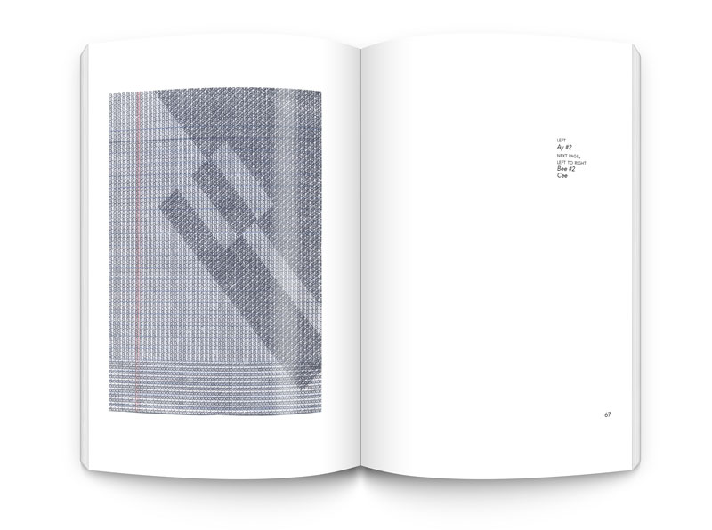
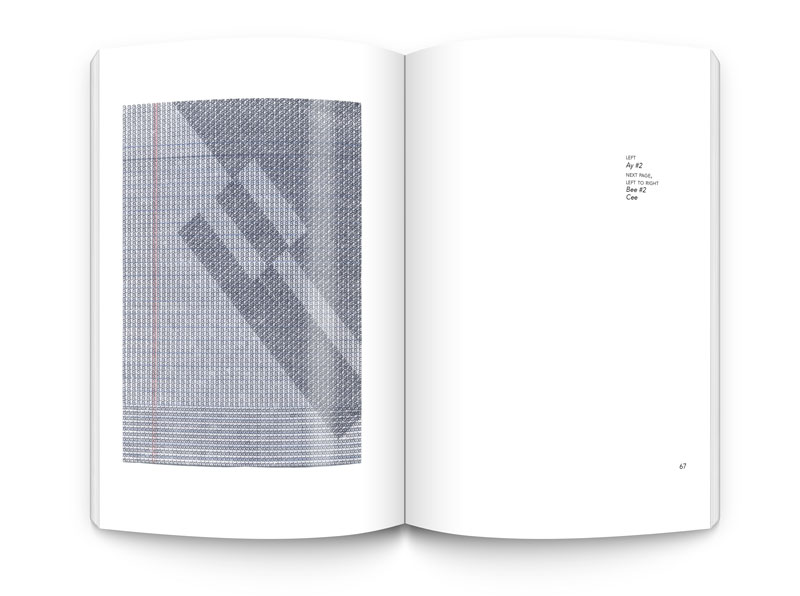

A Design Thesis
Introduction
When people think of typewriters they might think of the times when there were no such thing as computers. Back then people used typewriters as a writing tool to type up documents such as school papers, letters, and business documents. What many people don’t realize is that typewriters can be used as a creative tool to draw and make patterns.
Intertwined is a thesis that explores this tool in a creative way instead of as a tool for formal communication. You will notice that I have overlapped or intertwined letters to create different tonal values of color and make abstract shapes. Throughout the pages of this book is the process for my senior graphic design thesis project at Montserrat College of Art.
Fall 2016 Work
The work that I produced in the Fall of 2016 in design seminar is what brought me to where I am today with this project. During the semester I became interested in using typewriters. That is when I began to work on my typewriter drawing experiments on note pad paper. I eventually typed on a piece of antique paper to further my experimentation and pattern making.
Typewriter Drawings Book
I created a book out of all the drawings that I produced during the fall of 2016 and spring 2017. This book contains all of the pages that I scanned in to the computer. It was a long process because not only did I design the book but I also had to clean up most of the images in Photoshop. The reason I had to do that was so that they would sit nicely on the pages of the book without seeing the scanner background with them.
I ended up revising the book because I wasn’t happy with the way that it came out the first time it was printed. I realized that there were things that needed to be changed and added to make it better.
The revised edition of the book is available to purchase at: Blurb.com
 

3D mockups using PSDcovers.com
Works On Antique Paper
Since I really enjoy antique or vintage items I decided to order old paper for this project. The paper that I ordered was typewritten in 1912 and 1913. I completely typed over the entire document and covered the original text so it can’t be easily read anymore. I used different color typewriter ink ribbons to give a different effect on the page than just black ink. Looking at the close up images of these pages you can see the patterns that are made with the overlapped letters.
Last semester I enjoyed typing on John Mcvey’s ledger paper from the 1900’s so that’s the reason I wanted to do more of that as well. In all of these pages you can almost see a weaving effect going on which makes them very intriguing to look at.
DOTS Iconset
I designed an ornamental circle icon set by vectorizing the overlapped letters from the note pad typewriter drawings. This icon set consists of every lowercase letter of the alphabet. I wanted people to be able to download a unique icon set for their projects and be able to change the color. These icons can be used for many different things such as borders in a document, bullet points, dividers between sections in a chapter of a book, and even as a textural brush in Photoshop or Illustrator. I also made stickers out of these icons which a lot of people seemed to like.
DOTS Website
I designed a website mock up for my DOTS icon set. I wanted there to be a way for people to read what these icons are all about and then download the set for their own projects. At first I wanted these to be an ornamental typeface instead of just icons.
When I began designing I wanted the name of the typeface to be Intertwined. I then realized I didn’t want it to be called the same name as my thesis so I changed the name to DOTS. This happened at the time when I decided they would be just vector icons. It made a lot more sense for them to be called that. I’m also still deciding whether or not I want to actually get this site up and running on the web.
Other Experiments
I wanted to do a little bit more experimenting and have fun with the patterns that I made instead of just keeping them in a circle. I thought of the idea of putting them inside of the American Typewriter typeface. Although I wasn’t happy with the outcome it allowed me to see what else I can do with these patterns.
I also designed a few different organic shapes. These were made by extracting pieces of the overlapped letters.
Exhibition
On the week of March 29th, 2017 my work was on display at Montserrat College of Art’s 301 Gallery. The exhibition which was called Schema, featured nine other senior’s graphic designer thesis work. The opening reception was a success and I got a lot of compliments on my work and the way I displayed everything. People enjoyed typing their comments about my work on the typewriter that I let people use at the show.
All images taken by Mel Powsner
What's Next
During these past two semesters I have learned that there are endless patterns that can be made by typing and intertwining letters together. I also learned to really appreciate antique things especially typewriters and paper. Although graduation is almost here, I still want to continue with this project. I’d like to explore more with pattern making using typewriters as a tool and I want to type on more sheets of antique ledger paper, note pad pages, and other fabrics as well.
I would really like to get my DOTS icons out there. I want to open up a shop online where I will sell handmade jewelry such as necklaces and earrings and other accessories using the typewriter patterns.
© Lauren Cox 2017